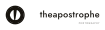
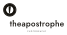

Vector identity · v1.0
The badge is a camera iris — six blades around a six-sided opening — with the apostrophe of theapostrophe standing in the light. The wordmark is set in Jost and outlined, so every file opens the same on any machine.
Iris ring, six blade corners and the apostrophe wedge. Built from exact circles and arcs — no autotracing, ~4 KB, scales to any size.
The same geometry in paper white, for photographs, dark paper stock and dark UI.

For narrow spaces — profile pictures, banners, packaging labels.
Use alone where the badge is already present, or when the name must run large.
Two colours carry the identity: Studio Ink on Paper. Brass is a highlight only — a stamp, a foil detail, one link colour. Never a third background.
Jost 500 · 400ABCDEFGHIJKLMNOPQRSTUVWXYZ
abcdefghijklmnopqrstuvwxyz 0123456789 ’
Open-source (SIL OFL), geometric, quiet — it stays out of the way of photographs. Lockups use 500; the PHOTOGRAPHY line is 400 with wide tracking.
Everything above is inside
theapostrophe-logo-files.zip.
Regenerate the whole set with npm run build.